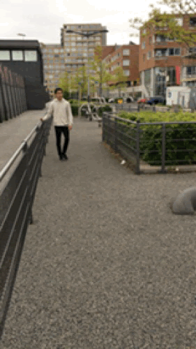

Freerunning
Ik doe aan freerunning. Freerunnen is een sport waarin je salto's maakt, over obstakels heen gaat en op dingen klimt. Ik doe het nu al drie jaar, sinds 2016. Freerunnen doe je buiten, maar als het winter is en op elke dinsdag en donderdag train ik binnen. Als ik binnen train is alles opgebouwd uit matten en zachte blokken, buiten is alles hard. Dus vaak als ik iets nieuws doe, doe ik dat eerst binnen en daarna buiten. Ik train binnen bij sportcentrum Ookmeer.
Freerunning is een manier van expressie door interactie met verschillende obstakels en omgeving. Freerunning kan salto's en andere trucks bevatten. Deze bewegingen worden meestal overgenomen van andere sporten, zoals gymnastiek, tricking of breakdancing. Het draait allemaal om creatief worden in een objectieve omgeving. Beoefenaars van Freerunning doen meestal ook Parkour. Freerunning wordt vaak geassocieerd met Parkour door stijlvolle bewegingen toe te voegen, waarin de kunst van het bewegen wordt getoond.